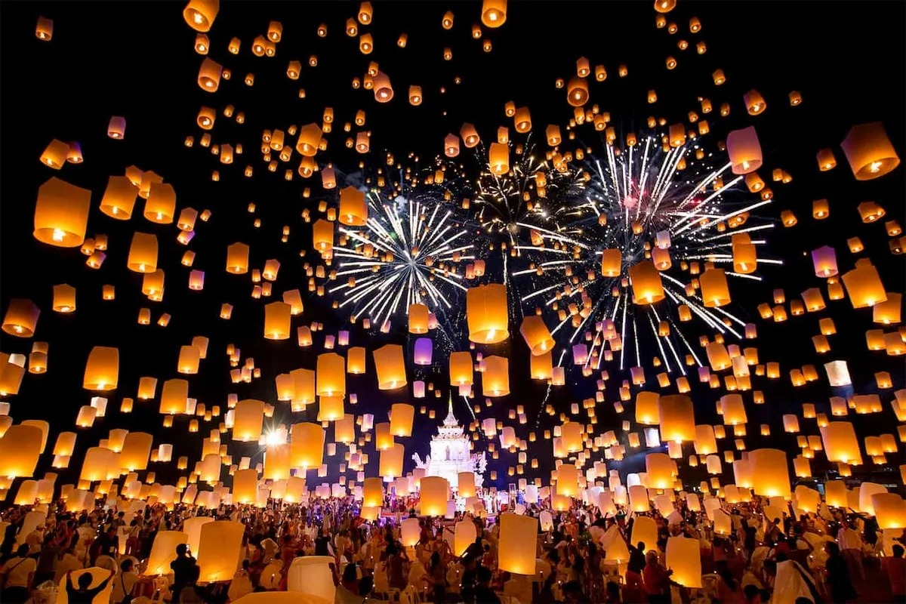
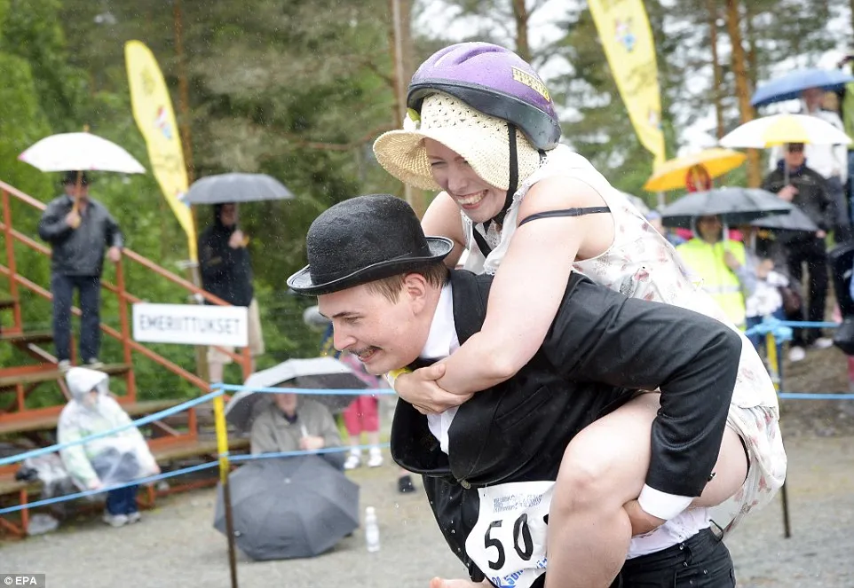
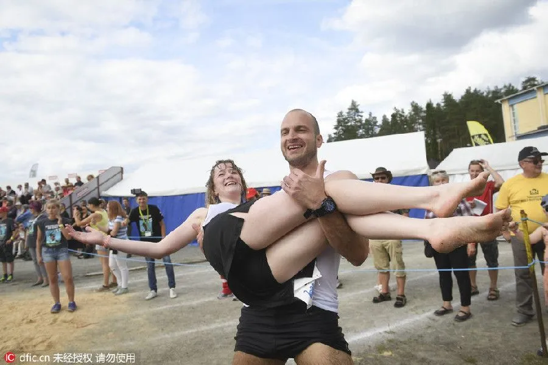
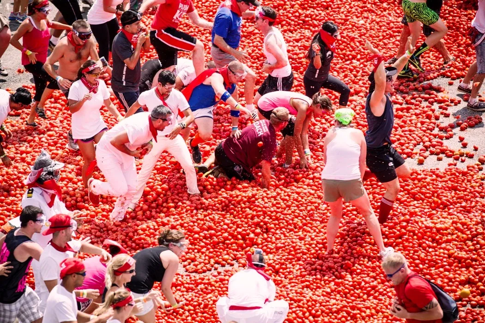
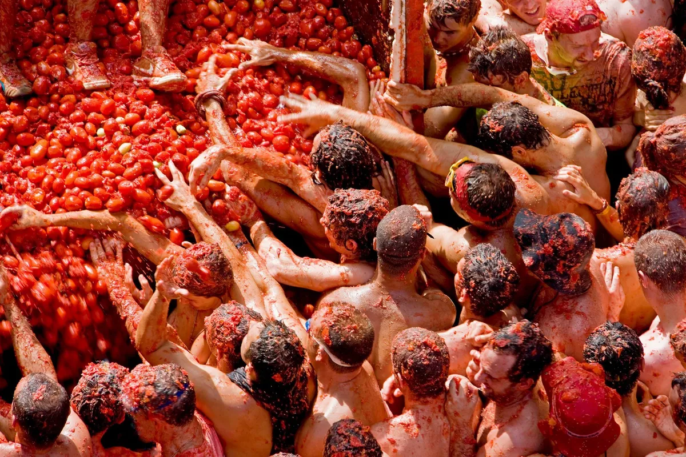
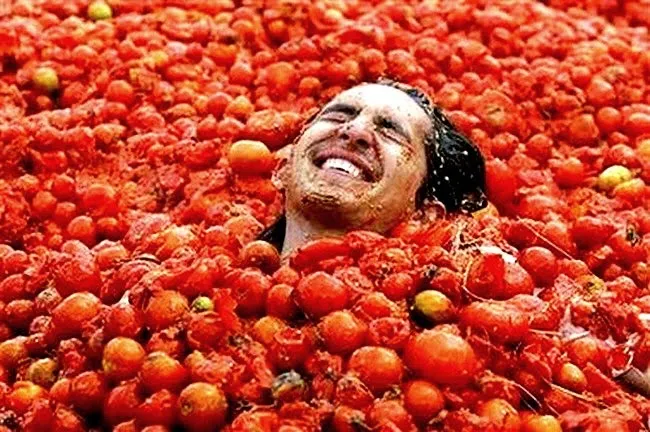

Hello, I'm ChBrus. And I'd like to talk you about traditions.
Bali's Day of Silence
This tradition is celebrated in Bali, its name is "Nyepi". In this tradition the people has a 24 hour period of silence and meditation. On this day the people isn't allowed to work, travel or leisure activities.


How you can see it, all of them are meditating, I think, that's a relaxing activity to do when you are so tired. Also you can do this with your family.
Lanna's Lantern festival, Yi Peng
In Chiang Mai, around November, you can watch a beautiful view about a lot of rice-paper lanterns. To be more specific, this tradution celebrated on the full moon of the 12th Thai month. These are some pictures about Lanna's Lantern Festival:
What do you think about the last image? I don't know about you, but I'd like to watch those lanterns with a special person for me. However, I'd like to go to Chiang Mai, just for that beautiful view 😯.
Finland's wife-carrying championships
In this tradition all of men try to carrying a woman in his back. That see so fun. The objectives are for the men, they need to finish the ride with some obstacles, also don't forget they carrying a woman.

I think, that look good, but, all of the men are going to have a backache 😞😆.
La Tomatina
This tradition celebrated at Buñol, Spain, on the late day of August. Everybody always take some tomatoes and throw it to another person. I recommend you to wear a T-shirt than never use it.
 If you don't want to wash your clothes, I don't recommend you this tradition 😆.
